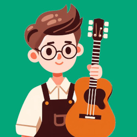

Présentation
Salut ! Moi, c'est Jeanne, ancienne luthière qui a décidé de troquer son rabot et son tablier pour ... un clavier ! C'est ma sœur jumelle qui m'a entraînée là-dedans en débutant des études en programmation. Et comme toute jumelle qui se respecte, je devais, moi aussi, sauter le pas ! Alors, me voilà à jongler entre les cordes de guitares et les lignes de code à travers l'aventure d'Odin Project. Et il faut l'avouer : je me suis laissée prendre au jeu, passant de projet en projet et ayant juste hâte au prochain.
Explorez mon portfolio et découvrez comment je suis passée des morceaux de bois aux morceaux de code et préparez-vous à être étonnés par cette fusion unique !
Background
- Résonnances du passé -
(merci au grand poète du 21e siècle, ChatGPT)Le développement web, en plein boom ces dernières années, pourrait se placer à l'extrême opposé de mon ancien choix d'étude, pas vraiment un secteur d'avenir : la lutherie. Pour faire court, j'ai appris pendant plusieurs années à fabriquer des guitares accoustiques de manière artisanale. Je vous partage quelques photos de réalisations pour les curieux.
Malheureusement, le manque d'opportunités dans ce domaine m'a conduit à réfléchir à d'autres horizons. Aussi, bien que je m'épanouissait dans la pratique et les projets concrets, mon esprit scientifique commençait à manquer de matière et de théorie à creuser. Et devinez quoi ? La programmation, c'est, pour moi, l'équilibre parfait entre théorie et pratique !
Bien que mon expérience en lutherie soit derrière moi, j'en garde des compétences précieuses qui ont trouvé leur place dans ma nouvelle carrière de dev. En voici quelques-unes :
- Créativité
- Respect pour les pairs plus expérimentés
- Apprentissage par la pratique
- Efficacité
- Amour du travail bien fait
- Amélioration constante de ses connaissances et techniques
Passions
Je vous laisse explorer mes passions à travers ces images. Survolez les pictogrammes pour faire apparaître la description.
Origines
Comme vous l'aurez peut-être remarqué, mon accent ne vient pas du Lac Saint-Jean ! Je viens de Lyon en France, mais je suis installée au Québec depuis plus de 6 ans. J'adore le Québec, ses expressions, ses paysages, mais je me devais de faire une petite section 'Hobbies de français' en hommage :
Recommendations
Comme il est trop difficile de choisir des sites de manière générale, au vu de tout ce qui se fait de fou aujourd'hui, je me suis concentrée quelques les sites d'apprentissage que j'adore !
Froggy : un classique pour apprendre Flexbox
↗ Sautez dans l'univers de Froggy juste ici.CSS Diner : pour comprendre les sélecteurs CSS de manière visuelle
↗ Mettez-vous à table ici.Odin Project : cours en open source et très complet
↗ Commencez votre premier projet en cliquant ici.CodeWars : pour entraîner ses capacités de résolution de problèmes, au cœur du métier de dev
↗ Prêt pour votre premier problème ? C'est ici que ça se passe.Scrimba et le cours de Bob Ziroll sur React
Une plateforme interactive de cours enregistrés avec des projets à compléter dans l'interface sandbox très complète.
↗ Enroll dans le cours de Bob Ziroll juste ici.Presque fini
J'espère que cette courte présentation vous aura plu. Ce n'est que la pointe visible de l'iceberg et le début de l'aventure dans le web !